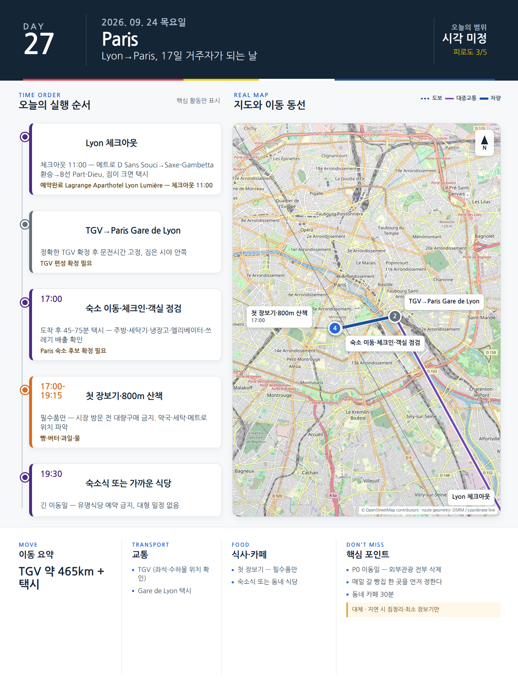

Day 27 · 9/24 목 · Lyon
오늘의 감사 요약
- 핵심 실행
- Annecy 당일치기
- 권장 출발
- 08:00 전후 역 이동
- 완충
- TER 20분 전 도착
- 최고 리스크
- 철도지연·날씨
- 우선 삭제
- 크루즈
- 대체안
- Lyon 생활일로 전환
- 식사·휴식
- Annecy 구시가지
- 잠금 필요
- TER·크루즈
피로도
4/5
원고의 일자별 피로도 표기다.
시간표
| 06:40–07:20 | 숙소 아침·Part-Dieu 이동 | 수하물 없이 작은 지퍼가방만 휴대. 택시 또는 메트로로 역 이동 |
| 10:15–11:45 | Vieille Ville·Thiou 운하 | 역→Rue Sainte-Claire→Palais de l’Île 외관→운하 골목 |
| 11:50–13:05 | Savoy 점심 | Chez Mamie Lise에서 diots·polenta 또는 일일메뉴. 무거운 fondue는 2인 공유 또는 생략 |
| 13:10–14:10 | Jardins de l’Europe·Pont des Amours·Pâquier | 호수와 산의 방향을 이해하는 핵심 산책 |
| 14:30–15:30 | 1시간 호수크루즈 선택 | 공식 안내 계획가 성인 €19. 날씨·운항 확인 |
| 15:40–17:15 | 호숫가 자유시간·카페 | 크루즈를 생략하면 Imperial 방향 평지산책 또는 Palais de l’Île 내부 선택 |
| 17:20–18:00 | 역 이동·간단한 간식 | 귀환열차 20분 전 도착 |
| 20:00–21:00 | Lyon 도착·숙소 귀환 | 역에서 바로 택시. 저녁은 숙소권 간단식 |
이 날의 장소
일자별 시간표와 본문 표기에서 찾은 것이다. 하루의 전부가 아니라 장소 카드가 있는 것만 담는다.
카드 이미지 보기

카드의 지도영역은 일정 순서를 보여주는 개요이며 내비게이션이 아닙니다. 실제 도보·운전 경로는 Google Maps에서 다시 계산하세요.